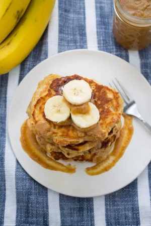

Ingredientes:
- 4 Huevos
- Edulcorante o Azucar a gusto
- Una banana
- 1/4 de Avena
Preparacion...
- Mezcalar el huevo con Edulcorante hasta lograr una textura espumante
- Aagregar la banana (lo mas triturda posible)
- Agregar 1/4 de avena (mezclar con movimientos envolventes)
- Mezclar 5 minutos de un lado y 5 minutos del otro
- Por ultimio! cortar rodajas de banana y ponerlas por encima para mas sabor.

Aca les dejo otra manera de hacer una tortilla de avena..
"
O! si se te entoja una y no estas en tu casa pero estas por Av. Corrientes, podes deleitarlas aca..